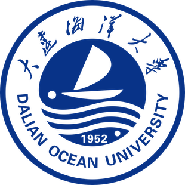

大连海洋大学 · 计算机科学与技术
大连海洋大学 · 计算机科学与技术 · GPA 3.64。 主要关注计算机视觉与AI 智能体方向。
国家级大创第一负责人，独立设计单目视觉定位系统，海上实测 10–15cm 精度、26 FPS 实时运行。在大模型微调、RAG 链路、Agent 工作流等方向有较多工程实践。
目前希望在计算机视觉与智能系统方向继续深入学习。
本科在读 · 2023.09 — 2027.07

🎓'">信息工程学院 · 计算机科学与技术 · 本科 · 2023.09 — 2027.07
核心课程：算法分析与设计 (95)、机器学习 (95)、概率论 (98)、数据库 (93)、Java (92)、高等数学 (97)
个人技能：Python / PyTorch / OpenCV / YOLO 系列 / 三维几何重建 / LLM 微调 / Agent 开发
已完成和正在进行的研究工作
近海 GPS 易受干扰，传统 PnP 在共线结构上存在几何退化。 设计低成本单目视觉定位系统，在强光、运动模糊等极端工况下实现厘米级定位。
双卡 T4 有限算力下，高效微调 Qwen2.5-7B 赋予「慈欣体」风格，端到端科幻文本生成。 清洗 120 万字语料，LoRA 注入 Attention 层，可训练参数仅 0.3%，权重不足 50MB。
基于 Pygame 与物理引擎构建 3D 赛车仿真环境，并使用近端策略优化（PPO）算法训练无人驾驶智能体，实现复杂赛道下的自动避障与高效巡航。
个人开发或主导的工程实践
大模型驱动的智能云盘：文件自动归档、多模态语义检索、AI 代理自主操作。
多模态大模型 + 三层用户画像 + 双路召回，构建高并发短视频推荐引擎。
基于微服务架构的在线评测平台，支持 ACM 模式、OOP 测试与数据科学评测，集成大模型辅助代码分析能力。
部分竞赛与荣誉记录
第 17 届 · Python 组 · 全国第 10 名
辽宁赛区
辽宁赛区
全国总决赛·第 19 届
第 16 届
全国总决赛·一带一路技术创新赛道
单目视觉定位系统
辽宁赛区·软件应用开发
常用的技术工具与框架